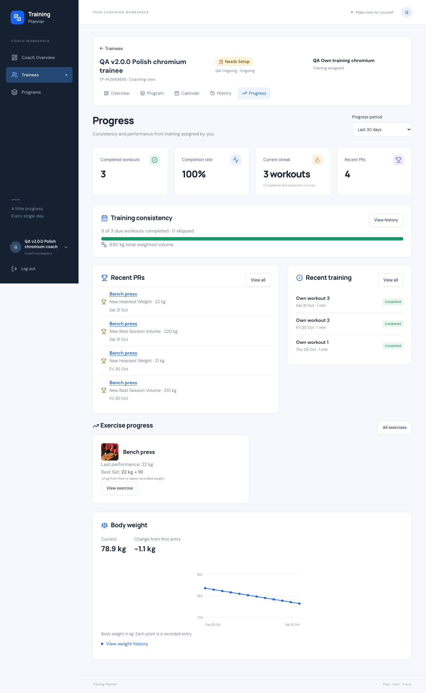
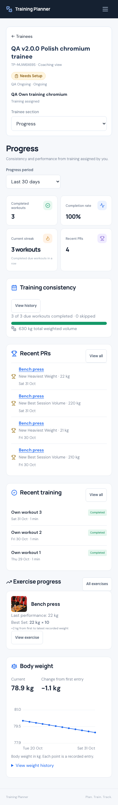
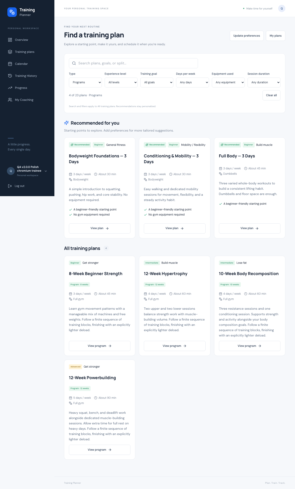

Training Planner · 1 November 2026Private training. Faster coaching. One useful Progress dashboard.
v2.3.3 — Coach Privacy, Live Filters & Visual Polish
NOT READYLive application · Verification evidence
1. Baseline
The brief names v2.3.2, but that immutable tag already shipped the Coach setup layout fix. This update therefore uses v2.3.3. Source baseline: v2.3.2 (15aa663); starting HEAD 79ec350 adds deployment documentation. Earlier tags remain unchanged.
2. Coach Plan privacy change
Coach views now show only training assigned by that authenticated Coach through an accepted relationship. Trainee personal plans and other-Coach assignments stay private.
3. Coach assignment scope
CoachAccess::plans and CoachAccess::sessions are the shared authoritative queries. They verify assignment relationship, Coach identity, trainee ownership and accepted consent. Ended assignments remain readable while the relationship remains accepted; management keeps existing active-subscription requirements.
4. Program view privacy
TrainingContext routes Program lists, detail access and selectors through the assignment scope. Current running training is prioritized over a newer unscheduled copy.
5. Calendar privacy
Personal and other-Coach sessions are excluded. Sessions the trainee schedules from this Coach’s assigned copy remain visible. Detached saved workouts require the authorized source-plan identity and matching owner.
6. History privacy
Coach History and direct History details use the same scoped sessions. Filter choices contain authorized plans only; forged plan-filter IDs are denied. Personal History retains all owner records and accepted anytime/early-completion semantics.
7. Progress privacy
Training summary, consistency, weighted volume, recent workouts, exercise results and PR calculations use only that Coach’s assignment sessions. Other-Coach performances cannot inflate their conclusions.
8. Direct-route authorization
Feature and browser checks deny personal/other-Coach Plan, Day, Session and History URLs, forged filters and scheduling selections. Revoked relationships remain denied. Actual workout writes remain owner-only.
9. Assign to Trainee redesign
Connected trainees appear immediately in a compact desktop table and mobile cards, with 25 rows per server page, coaching status, current training and direct action.
10. Live trainee search
Name and Training Planner ID searches update after 300 ms. Assignment and Trainees screens retain visible results during refresh and show result feedback without a Search button.
11. Assignment duplicate protection
Default assignment reuses the active assignment for that exact source template, under existing user/relationship locks. Assign another copy is an explicit separate choice. A two-process race verifies one assignment and independent copy.
12. Find a Training Plan redesign
Search and filters lead the page, followed by personalized recommendations and the full catalog. Existing preview, copy and program creation workflows are reused.
13. Recommended labels
Exactly the top three available recommendations show a Recommended badge. Reasons stay concise; no invented match score is displayed.
14. Search/filter placement
The top controls include type, level, goal, days, equipment and duration. Desktop has inline filters; mobile uses a live sheet. Done only closes it. The page explicitly says filters apply to All training plans.
15. Live filter architecture
One small useLiveFilters hook uses Inertia partial visits, current cancellation tokens, 300 ms text debounce and immediate discrete changes. It cancels superseded work before starting a new request. The bounded existing catalog filters locally; no Livewire or new dependency.
16. URL/filter-state behavior
Live queries replace the current history entry, reset pagination, preserve focus/scroll and restore from server props. Browser tests cover rapid final-input wins, refresh, back navigation, filter clearing and discovery URL persistence.
17. Progress redesign
Progress is now one dashboard: summary, consistency, current Program, compact recent records/training, exercise highlights and lower body-weight section. Existing Exercise Progress/detail routes remain available as drill-downs.
18. Training summary
Completed due workouts, completion rate, consecutive completed-workout streak and actual PR-event count follow the selected 30/90-day, six-month, one-year or all-time period. A short visible PR list does not cap the total.
19. Training consistency
The page shows completed versus due and skipped workouts with a labeled progress bar. Positive actual weights alone contribute weighted volume; zero/null weights retain reps and never fabricate weighted metrics.
20. Exercise Progress integration
The existing structured-result and PR engine supplies the most recently trained exercise highlights and factual first-to-latest weight differences. No new progression algorithm or speculative stalled label was added. Weight-history pagination cannot change highlights.
21. Recent PRs
The dashboard displays the latest four compact record events, linked to existing exercise details, with View all. First results establish baselines, equal results are not new PRs, and only currently completed workouts qualify.
22. Body-weight summary
Existing consent and data ownership are retained. Current, target and change are compact, with a small existing chart and expandable paginated history. Personal users retain record/edit/delete controls.
23. Coach Progress
Trainee context remains visible. Coach Progress is read-only, with no body-weight/goal/actual-performance edits. Existing authorized planned-prescription management elsewhere is preserved; Progress does not expose its apply control.
24. Icon system improvements
Existing Lucide icons identify metrics, status, trainee navigation, search, filters, scheduling, records, training consistency and body weight. Decorative icons are hidden from assistive technology and meaningful actions retain labels.
25. Coach Overview polish
Compact icon metrics, attention-first hierarchy, bounded upcoming/recent lists and view-all links replace unnecessarily large internal scrolling areas.
26. Trainee overview cleanup
Current assigned training appears once; other legitimate assignments show date/status context. This week shows five rows with View all. Next workout, progress, service status and goals stay distinct. Completed setup does not show an irrelevant Review setup action.
27. Schedule form cleanup
Schedule workout reuses the trainee header, a wider desktop form and mobile stacking. Only this Coach’s plans appear; a sole plan/day is selected and title prefilled. Calendar date-click remains respected and blank time means Anytime.
28. Schedule Manager polish
Existing automatic signed preview and safety model are unchanged. Add, Keep, Remove, Protected and Outside service dates gain icons and plain descriptions; switching groups remains immediate.
29. Mobile-first changes
Responsive checks cover 320, 360, 375, 390, 430, 768 and 1280 px plus 320×480. Prior header-width-aligned setup and readable radio cards are preserved. Tables become cards on phones; no new horizontal page overflow.
30. Accessibility
Native labeled inputs, textual statuses, decorative aria-hidden icons, visible loading/result feedback, focus preservation and existing dialogs are retained. New filter tests operate through accessible labels. Testing is browser-based, not a full screen-reader certification.
31. Query/performance findings
Measured a Coach with 25+ accepted trainees and representative program/history data: Overview 20 queries / 128 ms; roster 10 / 75 ms; assignment list 12 / 49 ms; Coach Progress 33 / 24 ms; Personal Progress 15 / 8 ms. No raw-set collection per result row. Timings are local observations, not production SLAs.
32. Architecture/component reuse
One CoachAccess scope, one shared live-filter hook, existing TrainingContext, duplicator, schedule, lifecycle, History and PR engines. Existing UI/RecordList/BodyWeightChart components are reused. No migration, dependency, parallel domain or generic UI framework.
33. Bugs found
The old broad session queries leaked unrelated training into Coach Calendar/History/metrics; default assignment could select an unrelated recent assignment; filter submission added friction; dashboard highlight pagination and truncated PR totals needed protection.
34. Bugs fixed
Scoped all relevant reads and metrics, reused exact-template assignment under locks, introduced cancellable live filtering, decoupled highlight pagination and counted all PR events. Browser harnesses were updated for live controls and explicit independent-copy intent; a WebKit assertion now waits for asynchronous page rendering.
35. SQLite
610 passed; 11,976 assertions. Complete SQLite suite.
36. MySQL
610 passed; 11,976 assertions. Complete isolated MySQL suite.
37. Concurrency
All six existing concurrency suites passed (88 checks), including the new real-process default-assignment race. Existing atomic activation, draft revision, resume/renew, notifications, program/control and recurring schedule races remain green.
38. JavaScript
38 JavaScript tests passed, including the combined duration/type filter cutoff.
39. Browser tests
26 browser-suite runs passed in Chromium and WebKit; 1540 explicit checks, plus width loops in full-lifecycle/PWA tests. The new flow checks delayed old responses, live filtering, URL refresh/back, privacy, automatic plan/day selection, read-only Coach Progress and weight-history pagination. HTTP workflows added 185 checks. Test harness fixtures were reset only within disposable accounts when reruns needed fresh lifecycle state.
40. Build
Production frontend build passed. The existing /images/gym.jpg runtime path is present; no dependency changes.
41. Formatting
Pint, Prettier, Composer strict validation, locked Composer audit and git diff checks passed. Composer reports no security advisories.
42. Data/media integrity
67 disposable local accounts and 724 QA media files removed. All 22 original table fingerprints and 44 original media hashes match exactly, including existing setup drafts.
43. Files changed
Application, tests and style changes: app/Http/Controllers/CoachAssignmentController.php, app/Http/Controllers/CoachController.php, app/Http/Controllers/ProgressController.php, app/Http/Controllers/ScheduleEntryController.php, app/Http/Controllers/TrainingHistoryController.php, app/Http/Controllers/TrainingPlanController.php, app/Services/CoachAccess.php, app/Services/CoachWorkspaceSummary.php, app/Services/ExerciseProgress.php, app/Services/ExerciseProgression.php, app/Services/TrainingContext.php, app/Services/TrainingPlanDuplicator.php, resources/js/Features/CoachingUI.jsx, resources/js/Features/ExerciseProgression.jsx, resources/js/Features/ExerciseRecords.jsx, resources/js/Features/ScheduleEntryForm.jsx, resources/js/Features/planDiscovery.js, resources/js/Pages/Coach/Assign.jsx, resources/js/Pages/Coach/ChooseTrainee.jsx, resources/js/Pages/Coach/Overview.jsx, resources/js/Pages/Coach/Trainee.jsx, resources/js/Pages/Coach/Trainees.jsx, resources/js/Pages/ExerciseProgress/Index.jsx, resources/js/Pages/Progress/Index.jsx, resources/js/Pages/Recommendations/Index.jsx, resources/js/Pages/ScheduleEntries/Form.jsx, resources/js/Pages/TrainingHistory/Index.jsx, resources/js/Pages/TrainingPlans/Index.jsx, resources/js/Pages/TrainingPlans/Schedule.jsx, resources/js/app.jsx, tests/Browser/coach-programs.mjs, tests/Browser/coach-workspace.mjs, tests/Browser/lifecycle-regressions.mjs, tests/Browser/program-stabilization.mjs, tests/Browser/programs.mjs, tests/Concurrency/CoachSetupConcurrency.php, tests/Feature/AtomicCoachSetupTest.php, tests/Feature/CoachWorkspaceTest.php, tests/Feature/CoachingScheduleAndProgressTest.php, tests/Feature/StabilizationTest.php, tests/js/planDiscovery.test.js, resources/css/polish.css, resources/js/Features/useLiveFilters.js, tests/Feature/CoachPrivacyPolishTest.php, tests/Browser/privacy-polish.mjs. Full file list is available in the release commit.
44. Commit
The release commit is the immutable commit resolved by tag v2.3.3; deployment evidence records its full SHA.
45. Tag
v2.3.3; preserve v2.3.2 and every earlier tag. No force push.
46. Deployment status
Source gates passed. Production deployment is authorized by the standing user instruction and AGENTS.md; fresh-backup deployment and live verification are pending. No schema or dependency migration is required.
47. Known limitations
No physical-phone or full assistive-technology test. No new push configuration, VAPID credentials, cron or delivery enablement. Existing body-weight viewing consent is unchanged. Periods use scheduled dates; PR records retain their established historical baseline semantics.
48. Final status
NOT READY — source checks passed; production deployment and live integrity verification pending.
Desktop Progress

Mobile Progress

Plan discovery
